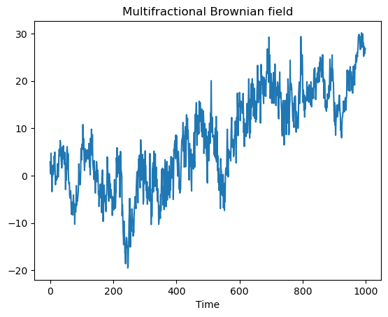
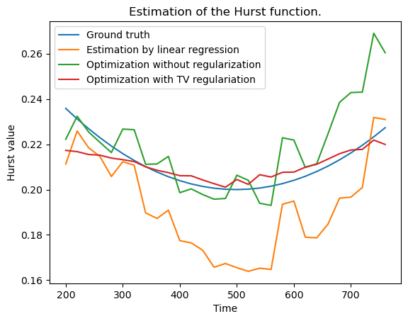

Estimation of the Hurst function of a multifractional Brownian motion#
Code author: Frédéric Richard <frederic.richard_at_univ-amu.fr>
The multifractional Brownian motion is a random process whose regularity varies in time. For this process, this regularity is determined by a functional parameter called the Hurst function. This function maps time position into the interval (0, 1). The larger the value, the smoother the process at a position. In this example, we use varprox to estimate the Hurst function.
To define the objective function, we use a least square criterion which compares the local quadratic variations of an observed process to the theoretical ones of a multifractional Brownian motion. We use a TV regularization to stabilize the estimation and evaluate its effect.
[1]:
from afbf import process
from numpy.random import default_rng, seed
from numpy import zeros, std, arange, power, mean, maximum, minimum, log, array
from numpy import concatenate, ones, inf
from scipy.optimize import lsq_linear
from varprox import Minimize, Parameters
from varprox.models.model_mfbm import Ffun, DFfun
from matplotlib import pyplot as plt
def Simulate_MFBM(H, seed_n=1):
"""Simulate the multi-fractional Brownian motion of Hurst function H.
:param ndarray H: The hurst function of the process.
:type H: :ref:`ndarray`
:param seed_n: A seed number.
:type seed_n: int.
:returns: a simulation of the process.
"""
N = H.size
fbm = process()
y = zeros((N,))
if min(H) != max(H):
# Simulation of a multifractional Brownian motion.
for j in range(N):
seed(seed_n)
fbm.param = H[j]
fbm.Simulate(N)
y[j] = 10 * fbm.y[j, 0] / std(fbm.y)
else:
# Simulation of a fractional Brownian motion.
seed(seed_n)
fbm.param = H[0]
fbm.Simulate(N)
y = fbm.y
return y
def Estimate_LocalSemiVariograms(y, scales, w_size, w_step, order=0):
"""Compute the local semi-variogram of the process.
:param y: A process
:type H: :ref:`ndarray`
:param scales: Scales at which the semi-variogram is to be computed.
:type H: :ref:`ndarray`
:param w_size: Size of the window where the semi-variogram is computed.
:type w_size: int
:param w_step: Step between two successive positions of computations.
:type w_step: int
:param order: Order of the increments. The default is 0.
:type order: int
:returns: Semi-variograms at each position (row) and scale (column).
"""
N = y.size
order += 1
Nr = N - order * max(scales) - w_size
if Nr < 0:
raise Exception("Decrease max of scales or w_size.")
v = zeros((Nr // w_step + 1, scales.size))
for j in range(scales.size):
# Increments
scale = scales[j]
increm = zeros(y.shape)
increm[:] = y[:]
for o in range(order):
increm = increm[:-scale] - increm[scale:]
increm = power(increm[:-scale] - increm[scale:], 2)
# Local semi-variogram.
w_ind = 0
for w in range(0, Nr, w_step):
v[w_ind, j] = 0.5 * mean(increm[w:w + w_size])
w_ind += 1
return v
def Estimate_HurstFunction(scales, v):
"""Estimate the Hurst function using linear regressions.
:param scales: Scales at which the semi-variogram was computed.
:type H: :ref:`ndarray`
:param v: Empirical semi-variogram.
:type v: :ref:`ndarray`
:return: Variance factors, Hurst function.
:rtype: :ref:`ndarray`
"""
N = v.shape[0] # Number of positions.
P = v.shape[1] # Number of scales.
v = log(maximum(v, 1e-310))
scales = 2 * log(scales).reshape((P, 1))
X = concatenate((scales, ones((P, 1))), axis=1)
lb = array([0, - inf])
ub = array([1, inf])
H = zeros((N,))
c = zeros((N,))
for j in range(N):
# Estimate the Hurst index at the nth position.
pb = lsq_linear(X, v[j, :], bounds=(lb, ub))
H[j] = pb.x[0]
c[j] = pb.x[1]
return H, c
rng = default_rng()
seed(15)
# Experiment parameters
N = 1000 # Size of the observed process.
order = 1 # Order of the quadratic variations to analyze the process.
scales = array([1, 5, 10]) # scales at which analyze the process.
w_size = 400 # Size of the local window where the process is analyzed.
w_step = 20 # Displacement step of the window.
H1 = 0.2 # Minimal Hurst value.
H2 = 0.3 # Maximal Hurst value.
mfbm = True # Set to True for experiment on multifractional Brownian field.
#: 1. Simulation.
#: Create the Hurst function.
if mfbm:
T = arange(stop=N, step=2)
N = N - 1
T = power(T / N, 2)
H = (1 - T) * H1 + T * H2
H = concatenate((H[::-1], H[1:]))
else:
H = 0.3 * ones(H.shape)
#: Simulate a mfbm of Hurst function H.
seed_n = 1
y = Simulate_MFBM(H, seed_n)
# Estimate the local semi-variogram of y.
v = Estimate_LocalSemiVariograms(y, scales, w_size, w_step, order)
#: 2. Estimations.
#: 2.1. Estimate the Hurst function by linear regression.
Hest1, c1 = Estimate_HurstFunction(scales, v)
#: 2.2. Estimate the Hurst function by minimisation without regularization.
scales2 = power(scales, 2)
logscales = log(scales2)
w = v.reshape((v.size,), order="F")
Hest2 = ones(Hest1.shape)
Hest2[:] = Hest1[:]
Hest2 = minimum(maximum(0.0001, Hest2), 0.9999)
pb = Minimize(Hest2, w, Ffun, DFfun, scales2, logscales, 0)
param = Parameters()
param.load("plot_mfbm.ini")
param.reg.name = None
pb.params = param
print("Optimization without regularization:")
Hest2, c2 = pb.argmin_h()
h2value = pb.h_value()
#: 2.3. Estimate of the Hurst function by minimisation with a regularization.
#: Regularization parameter x.
Hest3 = ones(Hest2.shape)
Hest3[:] = Hest1[:]
Hest3 = minimum(maximum(0.0001, Hest3), 0.9999)
pb = Minimize(Hest3, w, Ffun, DFfun, scales2, logscales, 0)
param.load("./plot_mfbm.ini")
param.reg.name = 'tv-1d'
pb.params = param
print("Optimization with TV regularization:")
Hest3, c3 = pb.argmin_h()
#: 3. Plot results.
plt.figure(1)
w_size2 = w_size // 2
plt.plot(y)
plt.title("Multifractional Brownian field")
plt.xlabel('Time')
plt.show()
plt.figure(2)
w_size2 = w_size // 2
t = arange(H.size)
t = t[w_size2:-w_size2:w_step]
t = t[0:Hest1.size]
Htrue = H[w_size2:-w_size2:w_step]
Htrue = Htrue[0:Hest1.size]
plt.plot(t, Htrue, label="Ground truth")
plt.plot(t, Hest1, label="Estimation by linear regression")
plt.plot(t, Hest2, label="Optimization without regularization")
plt.plot(t, Hest3, label="Optimization with TV regulariation")
plt.title("Estimation of the Hurst function.")
plt.legend()
plt.xlabel('Time')
plt.ylabel('Hurst value')
plt.show()
Optimization without regularization:
varprox reg = None | iter 0 / 1000: cost = 4.871723e+01 improved by 2.7187 percent.
varprox reg = None | iter 1 / 1000: cost = 4.772748e+01 improved by 2.0316 percent.
varprox reg = None | iter 2 / 1000: cost = 4.699879e+01 improved by 1.5268 percent.
varprox reg = None | iter 3 / 1000: cost = 4.645678e+01 improved by 1.1532 percent.
varprox reg = None | iter 4 / 1000: cost = 4.605011e+01 improved by 0.8754 percent.
varprox reg = None | iter 5 / 1000: cost = 4.574272e+01 improved by 0.6675 percent.
varprox reg = None | iter 6 / 1000: cost = 4.550898e+01 improved by 0.5110 percent.
varprox reg = None | iter 7 / 1000: cost = 4.533013e+01 improved by 0.3930 percent.
varprox reg = None | iter 8 / 1000: cost = 4.519261e+01 improved by 0.3034 percent.
varprox reg = None | iter 9 / 1000: cost = 4.508640e+01 improved by 0.2350 percent.
varprox reg = None | iter 10 / 1000: cost = 4.500405e+01 improved by 0.1827 percent.
varprox reg = None | iter 11 / 1000: cost = 4.494002e+01 improved by 0.1423 percent.
varprox reg = None | iter 12 / 1000: cost = 4.489002e+01 improved by 0.1113 percent.
varprox reg = None | iter 13 / 1000: cost = 4.485085e+01 improved by 0.0872 percent.
varprox reg = None | iter 14 / 1000: cost = 4.482009e+01 improved by 0.0686 percent.
varprox reg = None | iter 15 / 1000: cost = 4.479586e+01 improved by 0.0541 percent.
varprox reg = None | iter 16 / 1000: cost = 4.477674e+01 improved by 0.0427 percent.
varprox reg = None | iter 17 / 1000: cost = 4.476164e+01 improved by 0.0337 percent.
varprox reg = None | iter 18 / 1000: cost = 4.474966e+01 improved by 0.0268 percent.
varprox reg = None | iter 19 / 1000: cost = 4.474013e+01 improved by 0.0213 percent.
varprox reg = None | iter 20 / 1000: cost = 4.473255e+01 improved by 0.0170 percent.
varprox reg = None | iter 21 / 1000: cost = 4.472650e+01 improved by 0.0135 percent.
varprox reg = None | iter 22 / 1000: cost = 4.472166e+01 improved by 0.0108 percent.
varprox reg = None | iter 23 / 1000: cost = 4.471780e+01 improved by 0.0086 percent.
varprox reg = None | iter 24 / 1000: cost = 4.471471e+01 improved by 0.0069 percent.
varprox reg = None | iter 25 / 1000: cost = 4.471222e+01 improved by 0.0056 percent.
varprox reg = None | iter 26 / 1000: cost = 4.471021e+01 improved by 0.0045 percent.
varprox reg = None | iter 27 / 1000: cost = 4.470859e+01 improved by 0.0036 percent.
varprox reg = None | iter 28 / 1000: cost = 4.470729e+01 improved by 0.0029 percent.
varprox reg = None | iter 29 / 1000: cost = 4.470624e+01 improved by 0.0023 percent.
varprox reg = None | iter 30 / 1000: cost = 4.470539e+01 improved by 0.0019 percent.
varprox reg = None | iter 31 / 1000: cost = 4.470470e+01 improved by 0.0015 percent.
varprox reg = None | iter 32 / 1000: cost = 4.470414e+01 improved by 0.0013 percent.
varprox reg = None | iter 33 / 1000: cost = 4.470368e+01 improved by 0.0010 percent.
varprox reg = None | iter 34 / 1000: cost = 4.470331e+01 improved by 0.0008 percent.
Optimization with TV regularization:
varprox reg = tv-1d | iter 0 / 1000: cost = 4.991315e+01 improved by 0.3308 percent.
varprox reg = tv-1d | iter 1 / 1000: cost = 4.976913e+01 improved by 0.2885 percent.
varprox reg = tv-1d | iter 2 / 1000: cost = 4.962954e+01 improved by 0.2805 percent.
varprox reg = tv-1d | iter 3 / 1000: cost = 4.949527e+01 improved by 0.2705 percent.
varprox reg = tv-1d | iter 4 / 1000: cost = 4.936347e+01 improved by 0.2663 percent.
varprox reg = tv-1d | iter 5 / 1000: cost = 4.922758e+01 improved by 0.2753 percent.
varprox reg = tv-1d | iter 6 / 1000: cost = 4.911156e+01 improved by 0.2357 percent.
varprox reg = tv-1d | iter 7 / 1000: cost = 4.898505e+01 improved by 0.2576 percent.
varprox reg = tv-1d | iter 8 / 1000: cost = 4.887600e+01 improved by 0.2226 percent.
varprox reg = tv-1d | iter 9 / 1000: cost = 4.876143e+01 improved by 0.2344 percent.
varprox reg = tv-1d | iter 10 / 1000: cost = 4.866468e+01 improved by 0.1984 percent.
varprox reg = tv-1d | iter 11 / 1000: cost = 4.855736e+01 improved by 0.2205 percent.
varprox reg = tv-1d | iter 12 / 1000: cost = 4.847028e+01 improved by 0.1793 percent.
varprox reg = tv-1d | iter 13 / 1000: cost = 4.836540e+01 improved by 0.2164 percent.
varprox reg = tv-1d | iter 14 / 1000: cost = 4.826655e+01 improved by 0.2044 percent.
varprox reg = tv-1d | iter 15 / 1000: cost = 4.816105e+01 improved by 0.2186 percent.
varprox reg = tv-1d | iter 16 / 1000: cost = 4.809999e+01 improved by 0.1268 percent.
varprox reg = tv-1d | iter 17 / 1000: cost = 4.801953e+01 improved by 0.1673 percent.
varprox reg = tv-1d | iter 18 / 1000: cost = 4.793994e+01 improved by 0.1657 percent.
varprox reg = tv-1d | iter 19 / 1000: cost = 4.784168e+01 improved by 0.2050 percent.
varprox reg = tv-1d | iter 20 / 1000: cost = 4.777911e+01 improved by 0.1308 percent.
varprox reg = tv-1d | iter 21 / 1000: cost = 4.766569e+01 improved by 0.2374 percent.
varprox reg = tv-1d | iter 22 / 1000: cost = 4.759944e+01 improved by 0.1390 percent.
varprox reg = tv-1d | iter 23 / 1000: cost = 4.753237e+01 improved by 0.1409 percent.
varprox reg = tv-1d | iter 24 / 1000: cost = 4.748595e+01 improved by 0.0977 percent.
varprox reg = tv-1d | iter 25 / 1000: cost = 4.740143e+01 improved by 0.1780 percent.
varprox reg = tv-1d | iter 26 / 1000: cost = 4.734726e+01 improved by 0.1143 percent.
varprox reg = tv-1d | iter 27 / 1000: cost = 4.727829e+01 improved by 0.1457 percent.
varprox reg = tv-1d | iter 28 / 1000: cost = 4.723986e+01 improved by 0.0813 percent.
varprox reg = tv-1d | iter 29 / 1000: cost = 4.716332e+01 improved by 0.1620 percent.
varprox reg = tv-1d | iter 30 / 1000: cost = 4.713903e+01 improved by 0.0515 percent.
varprox reg = tv-1d | iter 31 / 1000: cost = 4.706439e+01 improved by 0.1583 percent.
varprox reg = tv-1d | iter 32 / 1000: cost = 4.704472e+01 improved by 0.0418 percent.
varprox reg = tv-1d | iter 33 / 1000: cost = 4.698764e+01 improved by 0.1213 percent.
varprox reg = tv-1d | iter 34 / 1000: cost = 4.696535e+01 improved by 0.0475 percent.
varprox reg = tv-1d | iter 35 / 1000: cost = 4.690497e+01 improved by 0.1286 percent.
varprox reg = tv-1d | iter 36 / 1000: cost = 4.688323e+01 improved by 0.0464 percent.
varprox reg = tv-1d | iter 37 / 1000: cost = 4.682014e+01 improved by 0.1346 percent.
varprox reg = tv-1d | iter 38 / 1000: cost = 4.680078e+01 improved by 0.0413 percent.
varprox reg = tv-1d | iter 39 / 1000: cost = 4.676464e+01 improved by 0.0772 percent.
varprox reg = tv-1d | iter 40 / 1000: cost = 4.673086e+01 improved by 0.0722 percent.
varprox reg = tv-1d | iter 41 / 1000: cost = 4.670082e+01 improved by 0.0643 percent.
varprox reg = tv-1d | iter 42 / 1000: cost = 4.664505e+01 improved by 0.1194 percent.
varprox reg = tv-1d | iter 43 / 1000: cost = 4.660998e+01 improved by 0.0752 percent.
varprox reg = tv-1d | iter 44 / 1000: cost = 4.660805e+01 improved by 0.0041 percent.
varprox reg = tv-1d | iter 45 / 1000: cost = 4.657633e+01 improved by 0.0681 percent.
varprox reg = tv-1d | iter 46 / 1000: cost = 4.656256e+01 improved by 0.0296 percent.
varprox reg = tv-1d | iter 47 / 1000: cost = 4.655503e+01 improved by 0.0162 percent.
varprox reg = tv-1d | iter 48 / 1000: cost = 4.652088e+01 improved by 0.0734 percent.
varprox reg = tv-1d | iter 49 / 1000: cost = 4.651528e+01 improved by 0.0120 percent.
varprox reg = tv-1d | iter 50 / 1000: cost = 4.648020e+01 improved by 0.0754 percent.
varprox reg = tv-1d | iter 51 / 1000: cost = 4.646190e+01 improved by 0.0394 percent.
varprox reg = tv-1d | iter 52 / 1000: cost = 4.643693e+01 improved by 0.0538 percent.
varprox reg = tv-1d | iter 53 / 1000: cost = 4.643048e+01 improved by 0.0139 percent.
varprox reg = tv-1d | iter 54 / 1000: cost = 4.639463e+01 improved by 0.0772 percent.
varprox reg = tv-1d | iter 55 / 1000: cost = 4.637213e+01 improved by 0.0485 percent.
varprox reg = tv-1d | iter 56 / 1000: cost = 4.634708e+01 improved by 0.0540 percent.
varprox reg = tv-1d | iter 57 / 1000: cost = 4.636097e+01 improved by -0.0300 percent.
varprox reg = tv-1d | iter 58 / 1000: cost = 4.634460e+01 improved by 0.0053 percent.
varprox reg = tv-1d | iter 59 / 1000: cost = 4.632226e+01 improved by 0.0482 percent.
varprox reg = tv-1d | iter 60 / 1000: cost = 4.631125e+01 improved by 0.0238 percent.
varprox reg = tv-1d | iter 61 / 1000: cost = 4.629265e+01 improved by 0.0402 percent.
varprox reg = tv-1d | iter 62 / 1000: cost = 4.628327e+01 improved by 0.0203 percent.
varprox reg = tv-1d | iter 63 / 1000: cost = 4.624632e+01 improved by 0.0798 percent.
varprox reg = tv-1d | iter 64 / 1000: cost = 4.626386e+01 improved by -0.0379 percent.
varprox reg = tv-1d | iter 65 / 1000: cost = 4.624016e+01 improved by 0.0133 percent.
varprox reg = tv-1d | iter 66 / 1000: cost = 4.625058e+01 improved by -0.0225 percent.
varprox reg = tv-1d | iter 67 / 1000: cost = 4.624805e+01 improved by -0.0171 percent.
varprox reg = tv-1d | iter 68 / 1000: cost = 4.623286e+01 improved by 0.0158 percent.
varprox reg = tv-1d | iter 69 / 1000: cost = 4.622920e+01 improved by 0.0079 percent.
varprox reg = tv-1d | iter 70 / 1000: cost = 4.619371e+01 improved by 0.0768 percent.
varprox reg = tv-1d | iter 71 / 1000: cost = 4.619124e+01 improved by 0.0053 percent.
varprox reg = tv-1d | iter 72 / 1000: cost = 4.617511e+01 improved by 0.0349 percent.
varprox reg = tv-1d | iter 73 / 1000: cost = 4.618159e+01 improved by -0.0140 percent.
varprox reg = tv-1d | iter 74 / 1000: cost = 4.616304e+01 improved by 0.0261 percent.
varprox reg = tv-1d | iter 75 / 1000: cost = 4.615118e+01 improved by 0.0257 percent.
varprox reg = tv-1d | iter 76 / 1000: cost = 4.615344e+01 improved by -0.0049 percent.
varprox reg = tv-1d | iter 77 / 1000: cost = 4.613789e+01 improved by 0.0288 percent.
varprox reg = tv-1d | iter 78 / 1000: cost = 4.612447e+01 improved by 0.0291 percent.
varprox reg = tv-1d | iter 79 / 1000: cost = 4.614116e+01 improved by -0.0362 percent.
varprox reg = tv-1d | iter 80 / 1000: cost = 4.614130e+01 improved by -0.0365 percent.
varprox reg = tv-1d | iter 81 / 1000: cost = 4.613393e+01 improved by -0.0205 percent.
varprox reg = tv-1d | iter 82 / 1000: cost = 4.611576e+01 improved by 0.0189 percent.
varprox reg = tv-1d | iter 83 / 1000: cost = 4.613788e+01 improved by -0.0480 percent.
varprox reg = tv-1d | iter 84 / 1000: cost = 4.610381e+01 improved by 0.0259 percent.
varprox reg = tv-1d | iter 85 / 1000: cost = 4.608010e+01 improved by 0.0514 percent.
varprox reg = tv-1d | iter 86 / 1000: cost = 4.609143e+01 improved by -0.0246 percent.
varprox reg = tv-1d | iter 87 / 1000: cost = 4.608519e+01 improved by -0.0110 percent.
varprox reg = tv-1d | iter 88 / 1000: cost = 4.609716e+01 improved by -0.0370 percent.
varprox reg = tv-1d | iter 89 / 1000: cost = 4.611744e+01 improved by -0.0810 percent.
varprox reg = tv-1d | iter 90 / 1000: cost = 4.612909e+01 improved by -0.1062 percent.
varprox reg = tv-1d | iter 91 / 1000: cost = 4.611476e+01 improved by -0.0751 percent.
varprox reg = tv-1d | iter 92 / 1000: cost = 4.609899e+01 improved by -0.0410 percent.
varprox reg = tv-1d | iter 93 / 1000: cost = 4.608856e+01 improved by -0.0184 percent.
varprox reg = tv-1d | iter 94 / 1000: cost = 4.608134e+01 improved by -0.0027 percent.
varprox reg = tv-1d | iter 95 / 1000: cost = 4.607226e+01 improved by 0.0170 percent.
varprox reg = tv-1d | iter 96 / 1000: cost = 4.606127e+01 improved by 0.0239 percent.
varprox reg = tv-1d | iter 97 / 1000: cost = 4.607712e+01 improved by -0.0344 percent.
varprox reg = tv-1d | iter 98 / 1000: cost = 4.608495e+01 improved by -0.0514 percent.
varprox reg = tv-1d | iter 99 / 1000: cost = 4.610309e+01 improved by -0.0907 percent.
varprox reg = tv-1d | iter 100 / 1000: cost = 4.608040e+01 improved by -0.0415 percent.
varprox reg = tv-1d | iter 101 / 1000: cost = 4.609075e+01 improved by -0.0640 percent.
varprox reg = tv-1d | iter 102 / 1000: cost = 4.609347e+01 improved by -0.0698 percent.
varprox reg = tv-1d | iter 103 / 1000: cost = 4.613002e+01 improved by -0.1491 percent.
varprox reg = tv-1d | iter 104 / 1000: cost = 4.606147e+01 improved by -0.0004 percent.

